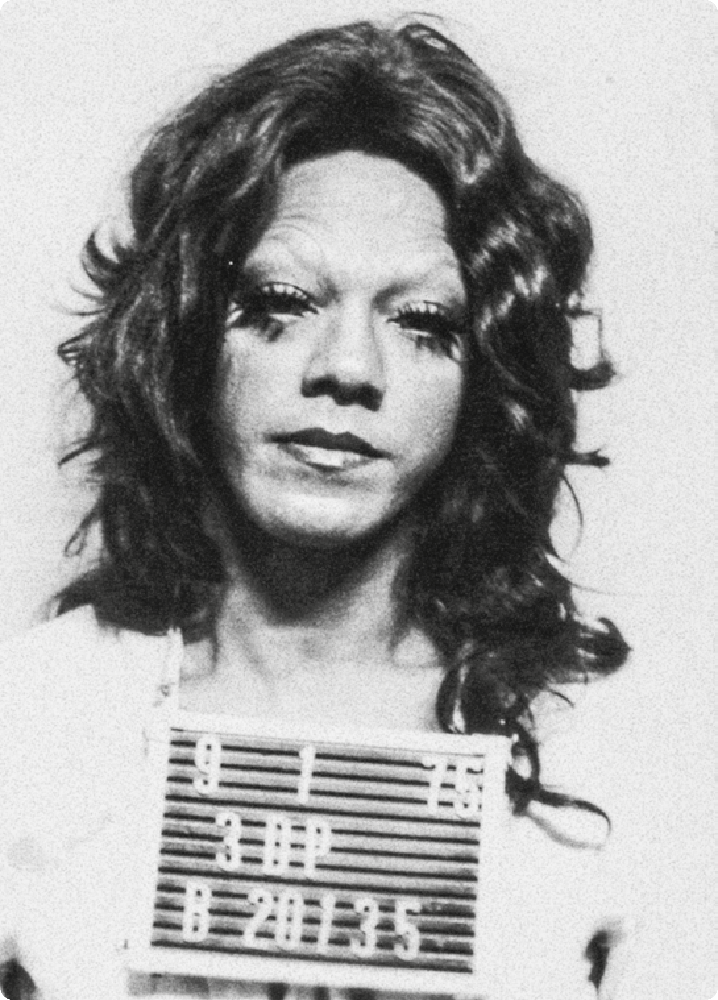

PESQUISA PARA INTEGRAÇÃO NA EXPOTEC SOBRE ARTE E CENSURA NA DITADURA MILITAR
CAMPUS Currais Novos
1964 GOLPE OU REVOLUÇÃO?
 Figura 1:
https://memorialdademocracia.com.br/publico/image/6691
Figura 1:
https://memorialdademocracia.com.br/publico/image/6691
Um dos assuntos que voltaram a tomar conta da mídia nacional
no último período foi a discussão sobre o período ditatorial
brasileiro, ocorrido em 31 de março de 1964. Alguns dizem que
o que ocorreu em 1964 se tratou de um golpe militar, outros
que não foi um golpe de Estado, mas sim de uma revolução. Em
uma máteria da BBC News Brasil historiadores, linguistas e
sociólogos afirmam, de acordo com os critérios técnicos que
definem o que é um golpe ou uma revolução, que “a disputa
sobre o termo a ser usado para designar o que aconteceu em
1964 é uma batalha pela "memória" do país que ganhou
nova força em meio ao aumento da polarização política e que
não há sinalização de que a polêmica vá arrefecer nos próximos
anos.” (PRAZERES, L.).
Segundo (DE SOUZA, S. R.) ”Um golpe está, diretamente,
vinculado a elementos burocratizados, simples, sem muita ou
mesmo nenhuma ligação direta com o povo. Este, quando ocorre a
mudança é pego de surpresa, ficando, por muito tempo, sem
compreender o que, de fato, aconteceu.
Uma revolução é algo muito complexo porque tem que contar com
inúmeros elementos subjetivos, com a participação direta do
povo e com o apoio do mesmo, porque envolve uma gama muito
extensa de preparativos que ocorrem, em sua maior parte [ou
quase que exclusivamente] na clandestinidade.”
Novamente abordando a discussão Golpe ou Revolução, os
historiadores e linguistas ouvidos pela BBC News Brasil
apontaram para os motivos pelos quais o debate sobre se o que
houve em 31 de março foi um golpe ou revolução permanece vivo.
Os indivíduos moldam sua visão de mundo a partir de suas
vivências sociais, tais como seu ciclo social ou ambiente em
que foi inserido, com isso, esses indivíduos veem a sociedade
e os acontecimentos nela do modo como seus iguais em
pensamento enxergam tais acontecimentos. Em depoimento à BBC
News Brasil o doutor em Linguística e professor da
Universidade do Estado de Minas Gerais (UEMG) Samuel Ponsoni
diz “Ao fazer essa escolha, eu me posicionei sobre uma certa
perspectiva político-ideológica no mundo. Se eu identifico
isto como um golpe, então (eu interpreto) que os golpistas não
respeitam os direitos do povo e depois participaram de um
conjunto de atrocidades políticas, torturas, desaparecimentos
e mortes", disse o professor. Ainda acrescenta, "
Os que dizem que foi uma revolução vão dizer que ela veio para
mudar a ordem vigente. Que mudaram para salvar o Brasil de
João Goulart. Eles dizem: 'por que não vamos chamar aquilo
de golpe? Porque eu e meu grupo salvamos o Brasil da perdição
comunista. Então, isso só pode ter sido uma
revolução'", afirmou o professor.(PRAZERES, L.)
Um dos principais motivos por esse impasse acontecer, seria o
fato do Brasil nunca ter julgado os autores da ditadura
militar, (PRAZERES, L.) cita “Ao contrário de argentinos e
chilenos, o Brasil encerrou o período ditatorial implementando
uma lei de anistia que, na prática, impediu que agentes do
Estado envolvidos em violações de direitos humanos durante o
regime militar fossem julgados por seus crimes. A lei foi
aprovada em 1979, ainda durante a ditadura. Na Argentina, por
outro lado, generais e outros oficiais que participaram da
ditadura que governou o país entre 1976 e 1983 foram levados a
julgamento e vários foram condenados e presos.”
Em sua entrevista à BBC News Brasil, a historiadora Ângela
Maria Castro Gomes comenta: “Essas disputas pela memória
voltam porque várias questões não foram enfrentadas. Temos a
lei da anistia e também houve uma falta de acesso a documentos
produzidos pela ditadura. Esse período ainda não foi
enfrentado pela sociedade civil de uma forma aberta", e o
historiador Murilo Cleto também comenta “Não vejo um horizonte
em que a discussão sobre se foi golpe ou revolução vai
simplesmente desaparecer da esfera pública num prazo curto de
tempo porque não vejo que as instituições do país assumiram o
compromisso de resgatar uma memória crítica em relação 1964”.
O CONTROLE SOBRE A IMPRENSA
 Figura 2:
https://static.mundoeducacao.uol.com.br/mundoeducacao/2020/12/propaganda-varguista.jpg
Figura 2:
https://static.mundoeducacao.uol.com.br/mundoeducacao/2020/12/propaganda-varguista.jpg
Os meios de comunicação têm um papel muito importante na
formação da opinião pública, já que a grande mídia bombardeia
a população diariamente com imagens, notícias, estereótipos,
entre outros. Sendo contadas de uma maneira que possibilite
provocar uma sensibilização, persuadindo a transmitir a
opinião como se fosse sua. Nessa perspectiva, existem muitos
países que utilizaram da “regulação” da mídia para controlar a
opinião pública, como instrumento de consolidação de Regimes
Autoritários, e esse foi justamente o caso do Brasil durante a
Ditadura Militar. c Sob o regime militar, o governo federal
editou a Lei nº. 5.250, conhecida também como Lei da Censura à
Imprensa. Seu objetivo era regular a liberdade de manifestação
do pensamento e de informação dos veículos midiáticos na
época. Em geral, a norma sujeitava à apreensão os impressos
que ofendesse a moral pública e os bons costumes, mas havia
margem para grande interpretação. Ainda previa uma pena de
detenção e multa.
Muitos meios de comunicação foram controlados pelo DIP
(Departamento de Imprensa e Propaganda) - um órgão responsável
pela realização da propaganda oficial do governo, a
fiscalização, a organização e a censura das informações, um
exemplo foi o jornal O Estado de São Paulo, que foi
administrado pelo órgão durante o período. Esse controle foi
fundamental para a implantação e consolidação da ditadura,
pois uma vez que não havia a disseminação da diversidade de
opiniões, ideologias e preocupações na televisão e rádios,
conseguia interferir nas decisões e escolhas de uma
população.
Os profissionais eram obrigados a seguir uma linha editorial
favorável ao regime, sem alternativas. Os mais conscientes
buscavam brechas quando tinham a oportunidade, para divulgar
informações em princípios proibidos. Assim, nesse período, era
necessário ler as entrelinhas.
Entretanto, vale salientar que houveram muitos profissionais
que foram complacentes e engajados, demonstrado claramente uma
escolha pela existência desse regime autoritário. Como cita os
jornalistas Daniel Aarão e Denise Rollemberg no Arquivo
Nacional “Censura nos meios de comunicação” no site do Governo
Federal: “Lembrar os jornalistas que resistiram ao arbítrio
não pode implicar no esquecimento daqueles – jornalistas e
jornais – que estiveram a favor do arbítrio, louvando em suas
páginas os grandes feitos dos militares, suas conquistas
econômicas e a pacificação do país, celebrando a eliminação
dos terroristas e dos maus brasileiros que ameaçavam a ordem e
o progresso”.
Por fim, quando o regime é derrotado, terminava também uma
fase da imprensa nada célebre ou gloriosa, em que houve - por
falta de escolha ou não - um padrão de cumplicidade e
colaboracionismo com o regime militar.
O MILAGRE ECONÔMICO BRASILEIRO
O milagre econômico brasileiro foi um período de rápido crescimento econômico ocorrido entre 1969 e 1974, durante o governo do general Emílio Médici, no contexto da ditadura militar (1964-1985). Esse crescimento foi impulsionado pela intervenção estatal baseada em práticas keynesianas, com investimentos em obras públicas, indústria pesada, siderurgia, hidrelétrica e petroquímica. Contudo, o milagre terminou com a crise internacional, especialmente a crise do petróleo (1973- 1974), que desestabilizou a economia.

ASPECTOS POSITIVOS E NEGATIVOS
Pontos positivos
- Crescimento expressivo do Produto Interno Bruto (PIB), com taxas anuais médias de 10%;
- Redução inicial da inflação;
- Modernização da economia e da infraestrutura pública.
Pontos negativos
- Crescimento da dívida externa, que passou de 3,9 bilhões para 12,5 bilhões de dólares no período;
- Aumento da desigualdade social, com 78,8% da população ganhando menos de dois salários mínimos;
- Agravamento das condições de trabalho e de vida, com mais horas trabalhadas para garantir alimentação mínima e aumento da subnutrição, mortalidade infantil e acidentes de trabalho.
Durante o milagre econômico brasileiro, foram construídas
diversas obras públicas, chamadas de Obras Faraônicas. Uma
delas foi a Usina Hidrelétrica de Itaipu.
A Usina Hidrelétrica de Itaipu, construída entre 1975 e 1982,
foi fruto de um acordo entre Brasil e Paraguai e é até hoje a
maior usina hidrelétrica dos dois países.
A Usina Hidrelétrica de Ilha Solteira, construída entre 1965 e
1978, foi a maior usina hidrelétrica do Ocidente, parte do
complexo energético de Urubupungá — o maior do planeta na
época.
Apesar do crescimento econômico, grande parte da população
ficou à margem do progresso. A renda média do brasileiro
passou de 17% da renda de um americano em 1964 para 28% em
1978, mas a desigualdade persistiu.
- Condições de trabalho deploráveis, com jornadas prolongadas e baixos salários;
- Pouca preocupação com a distribuição de renda, beneficiando sobretudo as elites econômicas;
- O crescimento foi sustentado por arrocho salarial, repressão política e aumento da exploração da força de trabalho;
- Empresas multinacionais, atraídas pelo ambiente de baixos salários, dominaram o setor industrial, intensificando a concentração de riqueza.
Após o fim do período, os problemas econômicos se agravaram:
- Inflação crescente;
- Déficit na balança comercial, causado pela alta dependência do petróleo importado;
- A dívida externa deixou uma “herança maldita”, dificultando a economia nas décadas seguintes.
Os impactos do milagre econômico geraram debates entre
defensores e críticos do modelo:
Os defensores do regime militar argumentaram que a
desigualdade era uma consequência natural do rápido
crescimento econômico e da demanda por mão de obra
qualificada.
Já os críticos do regime, como economistas opositores,
destacavam o modelo autoritário, os problemas estruturais e o
aprofundamento da concentração de renda como causas do
desequilíbrio.
Entre os críticos, economistas como Maria da Conceição Tavares
e Luiz Gonzaga Belluzzo ampliaram a análise ao incluir
aspectos como mobilidade social, pobreza, educação e políticas
salariais, evidenciando que a deterioração da distribuição de
renda era um dos principais problemas do modelo de
desenvolvimento.
Embora o termo “milagre econômico” tenha sido amplamente usado
para descrever esse período, o crescimento sustentado por
exploração da classe trabalhadora, arrocho salarial e
endividamento externo mostrou que o milagre trouxe mais
desafios do que benefícios para a sociedade brasileira como um
todo.
A REALIDADE POR TRÁS DA PROPAGANDA
A propaganda durante o regime militar brasileiro (1964-1985)
foi uma ferramenta central para sustentar o regime autoritário
e moldar o imaginário coletivo. Ela visava projetar uma visão
otimista e ufanista do Brasil, exaltando slogans como “Brasil,
ame-o ou deixe-o” e “Ninguém seguro este país”. Através de
comerciais, músicas patrióticas e o uso de eventos como a Copa
de 1970, o regime buscava associar progresso e nacionalismo ao
governo, enquanto censurava críticas e promovia uma narrativa
que legitimava seu poder.
Além disso, a propaganda mascarava problemas estruturais do
país, como a repressão, a tortura e as desigualdades sociais,
apresentando uma imagem idealizada do Brasil como uma nação
desenvolvida e unida. Esse discurso foi complementado por
disciplinas escolares como a Organização Social e Política
Brasileira (OSPB), que buscavam doutrinar jovens com valores
alinhados ao regime.
REFERÊNCIAS
MAIA, D. O que é regulação da mídia e por que o tema gera
polêmica? | Politize! Disponível em:
<https://www.politize.com.br/regulacao-da-midia/>.
Lei de Censura à Imprensa completa 55 anos. Disponível em:
<https://memorialdaresistenciasp.org.br/noticias/lei-censura-imprensa-55-anos/>.
Ditadura de 1964 e meios de comunicação - Teoria e Debate.
Disponível em:
<https://teoriaedebate.org.br/colunas/ditadura-de-1964-e-meios-de-comunicacao/>.
Acesso em: 21 nov. 2024.
Regime militar: A imprensa alternativa e a liberdade de
expressão. Disponível em:
<https://educacao.uol.com.br/disciplinas/historia-brasil/regime-militar-a-
imprensa-alternativa-e-a-liberdade-de-expressao.htm>.
Departamento de Imprensa e Propaganda (DIP). Disponível em:
<https://mundoeducacao.uol.com.br/historiadobrasil/departamento-de-imprensa-e-
propaganda-dip.htm>.
PRAZERES, L. Golpe ou revolução: como guerra de versões
persiste 60 anos depois de 1964? BBC, 29 mar. 2024.
DE SOUZA, S. R. O QUE DIFERENCIA, DE FATO, UM GOLPE DE UMA
REVOLUÇÃO? Disponível em:
<https://periodicos.ufes.br/semanadehistoria/article/view/23117/15710>.
Acesso em: 17 nov. 2024.
BARRUCHO, L. 50 anos do AI-5: Os números por trás do “milagre
econômico” da ditadura no Brasil. Disponível em:
<https://www.bbc.com/portuguese/brasil-45960213>.
PAULINO, A. E. L. O impacto do “milagre econômico” sobre a
classe trabalhadora segundo a imprensa alternativa. Revista
Katálysis, v. 23, p. 562–571, 16 out. 2020.
Relançamento de livro conta sobre a propaganda do período
militar no Brasil | Portal FGV. Disponível em:
<https://portal.fgv.br/noticias/relancamento-livro-conta-
sobre-propaganda-periodo-militar-brasil>. Acesso em: 21
nov. 2024.
Propaganda do regime militar – Memorias da Ditadura.
Disponível em:
<https://memoriasdaditadura.org.br/cultura/propaganda-do-regime-militar/>.
RODRIGUES, N. Propagandas do Regime Militar de 1964 - História
do Brasil. Disponível em:
<https://www.infoescola.com/historia/propagandas-do-regime-militar-
de-1964/#google_vignette>. Acesso em: 21 nov. 2024.
Componentes:
Emilly Elídia Andrade Macedo dos Santos,Isli Mainã de Souza Carneiro,João Ítalo Melo Fernandes,João Pedro de Azevedo Silva,Jordan Cainã Pires Ferreira,Luís Henrique Pereira da Silva,Maria Fernanda dos Santos Souza e Pedro Henrique de Souza Santos.
PESQUISA PARA INTEGRAÇÃO NA EXPOTEC SOBRE ARTE E CENSURA NA DITADURA MILITAR
CAMPUS Currais Novos
1. CENSURA MIDIÁTICA (ABERTURA)
A censura midiática se baseou em supressão de críticas ao governo, onde o regime procurava eliminar notícias e matérias que fizessem críticas à ditadura e aos seus abusos, além do controle da opinião pública. Ao controlar as informações, o governo podia moldar a forma como a população via a realidade política, social e econômica do país, e ainda a prevenção dos movimentos de resistência, onde o Estado impedia que a população se mobilizasse contra o regime, censurando movimentos de protesto e organizações que se opunham à ditadura.
Jornais e revistas eram censurados por meio da censura prévia, onde o governo revisava todas as publicações antes de serem distribuídas. Qualquer conteúdo considerado subversivo ou contra o regime era cortado ou alterado. Publicações como O Pasquim e Jornal do Brasil foram alvos frequentes dessa censura.
2. EXPOSIÇÃO MUSICAL
Letras consideradas subversivas eram proibidas, e os artistas que desafiavam o regime eram perseguidos, presos ou exilados. Uma letra conhecida é a de Caetano Veloso, na letra de ”Coração Vagabundo”, composta em 1968, que foi interpretada como subversiva, e Caetano foi preso durante o regime. A música falava de uma liberdade de pensamento e atitude que o governo via como perigosa.
3. EXPOSIÇÃO HISTÓRICA
A censura também foi alimentada pela Lei de Imprensa (1967), que concedia ao governo o poder de determinar o que poderia ser publicado, transmitido é exibido no país. O regime empregou táticas como o uso de Dops (Departamento de Ordem Política e Social) para monitorar a produção cultural e artística, além de intimidar jornalistas e músicos. Algumas produções, como o Teatro Oficina, se tornaram espaços de resistência à censura. Após a repressão política e a censura, muitos artistas optaram pelo exílio. Caetano Veloso, Gilberto Gil, Chico Buarque, Zé Keti, e outros músicos e intelectuais foram forçados a deixar o Brasil. Caetano e Gil, por exemplo, foram exilados em Londres em 1969 após o governo militar ter proibido suas músicas.

Artistas protestam contra a Ditadura Militar
Foto: Domínio público / Acervo Arquivo Nacional

Artistas contra a ditadura militar no AI-5 em 1968

Caetano Veloso e Gilberto Gil foram obrigados a se exilar para Londres em 1969. (Foto:Reprodução)
4. CONCLUSÃO
A censura não se limitava às letras, mas também ao contexto em que essas músicas ou outro tipo de arte foram produzidas, muitas vezes sendo reconfiguradas ou proibidas para manter o controle sobre a produção cultural do país. Mesmo diante da repressão, esses artistas conseguiram, de maneira criativa, passar suas mensagens de resistência e protesto, impactando gerações com suas canções.
Componentes:
Eduardo Igor
Fernanda Cecília
Joamerson Islan
Louise Dianna
Luiza Beatriz
Os Anos de Chumbo
No dia 13 de dezembro de 1968, o então presidente Artur da Costa e Silva decreta o Ato Institucional Nº5, o último e mais severo ato institucional implementado pelos militares. Ele serviu como resposta direta ao número exponencial de protestos que eclodiu no mesmo ano, como a Passeata dos Cem Mil e o velório do estudante Edson Luís, encarados como um afronte à ordem nacional. O decreto suspendeu deliberadamente direitos a presos e opositores políticos e à população civil, iniciando um novo período na história brasileira, conhecido como “Anos de Chumbo”.

A resistência Feminina em Tempos de Ditadura
A resistência feminina durante a Ditadura Militar no Brasil (1964-1985) foi marcada pela coragem e pela luta de mulheres que enfrentaram o regime autoritário em busca de democracia e justiça social. Apesar das adversidades, elas desempenharam papéis fundamentais como líderes, militantes, intelectuais e comunicadores, desafiando as estruturas repressivas que buscavam silenciá-las. Embora ativas e comprometidas com a luta, as mulheres também enfrentaram obstáculos dentro das próprias organizações políticas das quais faziam parte. Muitas vezes, não eram completamente ouvidas ou respeitadas dentro dos grupos, sendo constantemente silenciadas ou subestimadas. Isso ocorria devido à persistência de valores machistas, que não viabilizavam a plena participação feminina, e à visão de que a gravidez e a maternidade eram incompatíveis com a militância revolucionária. Em algumas situações, as mulheres eram encarregadas das missões mais arriscadas justamente por serem vistas como menos ameaçadoras pelas forças repressoras. No entanto, mesmo desempenhando papéis de destaque e coragem, era raro que conseguissem alcançar cargos de liderança nas organizações revolucionárias, um reflexo da resistência não só do regime, mas também da sociedade patriarcal da época.
Tortura Feminina
A tortura sofrida pelas mulheres durante a Ditadura Militar no Brasil se diferenciava da dos homens. Elas foram alvo sistemático de abusos, como tortura sexual, choques elétricos em órgãos genitais, abortos forçados e agressões na presença de seus filhos. Algumas mulheres foram torturadas diante de suas crianças ou impedidas de amamentá-las, intensificando a crueldade emocional e psicológica.
Um simbolo de resistência

Dilma Rousseff, ex-presidente da república, tornou-se um dos nomes mais emblemáticos da resistência à ditadura militar no Brasil. Em meio à radicalização do regime após o AI-5, em 1968, muitos jovens da época, como Dilma, acreditavam que a luta armada era uma forma legítima de enfrentar o autoritarismo e buscar uma sociedade mais justa. Inspirada por ideais socialistas e pela necessidade de combater as desigualdades sociais, Dilma ingressou em organizações militantes que se opunham ao regime.
Um simbolo de resistência
Dilma fez parte do COLINA (Comando de Libertação Nacional) e, posteriormente, da VAR-Palmares (Vanguarda Armada Revolucionária Palmares), assumindo papéis fundamentais no planejamento de ações e no apoio logístico aos movimentos. Embora não participasse diretamente dos conflitos armados, era responsável por administrar e planejar as operações, atuando na distribuição de recursos, na comunicação entre os militantes e na formação de novos quadros.
Um simbolo de resistência

Em 1970, aos 22 anos, Dilma foi presa pela Operação Bandeirante (Oban) e enfrentou quase três anos de prisão, marcados por sessões brutais de tortura. Mesmo sob intensa violência, resistiu firmemente, recusando-se a fornecer informações que comprometessem seus companheiros. Sua coragem tornou-se símbolo de resiliência. Após ser libertada, Dilma seguiu na política levando consigo a experiência de sua luta contra a ditadura, que moldou seu compromisso com a democracia e os direitos humanos.
A Comunidade LGBT+ na Ditadura
As repressões podiam ser feitas de diversas formas de prisão até mesmo morte, algo super comum na época eram nas chamadas televisivas os jornais abrangerem casos de homossexuais e pessoas trans mortas em um noticiário. Incentivada não só pelas autoridades militares da época, mas também pela sociedade, o extermínio e caça ao grupo se dava pelo fato de os nomearem criminosos, pois na época, ser LGBT+ era equiparado ao crime de “vadiagem”, esse que permitia aos policiais fazerem o que quiser com essas pessoas, até mesmo assassinar esses grupos.
Repressões a comunidade
Durante o período da ditadura militar aqui no Brasil, muitas vertentes em que se encontram as minorias do país foram afetadas diretamente pelo golpe, dentre elas a comunidade LGBT+, que até hoje é marcada pelos resquícios da repressão que atormentava a sociedade naquela época. Dito isso, essas pessoas ficaram manchadas com as inúmeras violações contra os direitos humanos, essas que eram chamadas de “os desviantes”, expressão que na época se referia aos gays, lésbicas e transexuais.

A Operação Tarântula
Devido aos surtos de HIV no Brasil durante os anos 80 (época em ainda se vivia a ditadura militar no país) algumas medidas foram tomadas pelos militares da época para conter o surto, esse que eles afirmavam ser uma “punição aos gays”. Dentre elas, estava a mais famosa operação que circulava São Paulo, a “Operação Tarântula”, aprovada pelo delegado de polícia José Wilson Richetti e os delegados locais, com o intuito de melhorar a sociedade através das mortes da comunidade LGBT+, dentre essas principalmente a comunidade trans, que são as mais vulneráveis por conter 90% da sua população vivendo nas ruas através da prostituição.
Contra a repressão

Como uma forma de resistência, além dos protestos e marchas contra o fim da ditadura, novos jornais midiáticos voltados para o apoio da comunidade LGBT+ foram criados, de maneira clandestina, para acabar com essa repressão, utilizando de notícias alertando a população sobre as crescentes mortes e utilizando de aspectos para desmistificar ideias preconceituosas voltadas para esse grupo. Alguns dos jornais criados naquela época em prol disso foram: “O Lampião da Esquina” e o “Chanacomchana”.
Referências bibliográficas
GUEDES, Robert. Resistência LGBTQIA+ na Ditadura Militar – Um retrato não contado da história do país. [S. l.], 28 jun. 2023. Disponível em: https://vladimirherzog.org/resistencia- lgbtqia-na-ditadura-militar/. Acesso em: 19 nov. 2024.
25 MATERIAIS PARA ENTENDER COMO FOI A DITADURA PARA LGBTS. In: SOCIEDADE CIVIL (São Paulo). Casa 1. 25 MATERIAIS PARA ENTENDER COMO FOI A DITADURA PARA LGBTS. [S. l.]: Casa 1, 31 mar. 2021. Disponível em: https://www.casaum.org/25-materiais-para-entender-como-foi-a-ditadura-para-lgbts/. Acesso em: 19 nov. 2024.
QUINALHA, Renan. Retratos em disputa – a ditadura e a perseguição LGBTQIA+. [S. l.], 8 abr. 2024. Disponível em: https://aterraeredonda.com.br/retratos-em-disputa-a-ditadura-e-a- perseguicao-lgbtqia/. Acesso em: 19 nov. 2024.
MEMORIAL DA DEMOCRACIA. AI-5 Confere Poder Total aos Militares. [S. l.]. Disponível em: https://memorialdademocracia.com.br/card/ai-5-confere-poder-total-aos-militares. Acesso em: 20 nov. 2024.
MEMÓRIAS DA DITADURA. Dilma Rousseff - Memórias da Ditadura. [S. l.]. Disponível em: https://memoriasdaditadura.org.br/personagens/dilma-rousseff/. Acesso em: 19 nov. 2024.
MEMÓRIAS DA DITADURA. Mulheres, Repressão e Resistência. [S. l.]. Disponível em: https://memoriasdaditadura.org.br/mulheres-resistencia-e-repressao/. Acesso em: 19 nov. 2024.
PLANALTO. Ato Institucional Nº5, de 13 de Dezembro de 1968. [S. l.]. Disponível em: https://www.planalto.gov.br/ccivil_03/ait/ait-05-68.htm. Acesso em: 20 nov. 2024.
A Abertura Política no Brasil (1974-1985)
Componentes:
Arthur David, Alyssa Lourena, Carlos Henrique, Milena Mayara, Maria Laura, Natanael Franklin, Natalia Alice, Melyssa Taina
Desenvolvedor da Página:
Luiz Pinto
A Abertura Política foi o processo de transição
da ditadura militar para a democracia no Brasil, ocorrido entre
1974 e 1985. Este movimento visava reduzir o autoritarismo e
permitir uma transição controlada para a democracia. Iniciado
durante o governo de Ernesto Geisel, a abertura foi conduzida de
maneira "lenta, gradual e segura", com o objetivo de preservar a
influência das Forças Armadas no processo, sem romper com as
bases econômicas e institucionais do regime.
A finalidade da Abertura Política era garantir uma
transição suave, evitando o crescimento da oposição de esquerda
e protegendo os militares de processos por seus atos durante o
regime. Esse período envolveu importantes mudanças, como:
-
Revogação do AI-5: ocorreu em 1979, marcando o fim do Ato Institucional Número 5, que havia suspendido direitos civis e políticos no Brasil durante a ditadura militar.
-
Aprovação da Lei de Anistia: Em 1979, a Lei de Anistia permitiu o retorno de exilados políticos e a libertação de presos políticos.
-
Restauração do Pluripartidarismo: A volta do sistema multipartidário permitiu maior diversidade política e a formação de novos partidos.
A abertura culminou na eleição indireta de Tancredo Neves em 1985, marcando o fim do regime autoritário e o início de uma nova era democrática no Brasil.
1. GOVERNO ERNESTO GEISEL (1974-1979)
O Governo Geisel (1974-1979) representou um período de transição crucial na história do Brasil, marcando o início do processo de abertura política após anos de regime militar. O general Ernesto Geisel, ao assumir a presidência, optou por uma estratégia de distensão política gradual e controlada, visando a um retorno à democracia, mas sem abrir mão do controle do processo.

2. POLÍTICA DE DISTENSÃO
A política de distensão consistia em um conjunto de medidas que visavam relaxar a rigidez do regime militar. Entre as principais ações, podemos citar:
-
Revogação do Ato Institucional Número 5 (AI-5): Essa medida, embora tardia, representou um importante passo na direção da abertura, pois havia concentrado poderes nas mãos do governo e permitido a repressão indiscriminada.
-
Liberação de presos políticos: A libertação gradual de presos políticos contribuiu para reduzir a tensão social e criar um ambiente mais propício ao diálogo.
-
Flexibilização da censura: A censura à imprensa e aos meios de comunicação foi gradualmente relaxada, permitindo uma maior liberdade de expressão.
3. LEI DA ANISTIA
A Lei da Anistia (1979) foi o ápice da política de distensão e um marco fundamental na transição para a democracia. Essa lei concedeu anistia a todos os envolvidos nos atos políticos praticados durante o período da ditadura, incluindo tanto os agentes do regime quanto os opositores.
Controvérsias acerca da Lei
-
Anistia ampla: A lei concedeu anistia a todos os envolvidos, incluindo torturadores e agentes da repressão, o que gerou muitas críticas e debates sobre a justiça e a impunidade.
-
Ausência de punição: A lei não previu punições para os crimes cometidos durante a ditadura, o que foi visto por muitos como uma forma de impunidade.
-
Discussões sobre a verdade: A anistia impediu a investigação e o julgamento dos crimes cometidos durante a ditadura, dificultando a busca pela verdade e a reparação das vítimas.
Consequências
-
Fim da ditadura: A Lei da Anistia contribuiu para o enfraquecimento do regime militar e acelerou o processo de transição para a democracia.
-
Abertura política: A lei abriu caminho para a realização de eleições diretas para presidente e para a redemocratização do país.
-
Debates sobre a memória e a justiça:A lei gerou um intenso debate sobre a memória da ditadura, a importância da justiça e a necessidade de se romper com o ciclo da violência.
MOVIMENTOS SOCIAIS
As greves operárias no ABC Paulista: As greves operárias
no ABC Paulista, lideradas por Luiz Inácio Lula da Silva, foram
um marco significativo na história do Brasil e desempenharam um
papel crucial na abertura política do país. Essas greves
ocorreram entre 1978 e 1980 e foram impulsionadas por
trabalhadores metalúrgicos que protestavam contra as políticas
de arrocho salarial e buscavam melhores condições de trabalho.
Os trabalhadores da fábrica de caminhões da Scania, em São
Bernardo do Campo (SP), cruzaram os braços exigindo um aumento
salarial de 20%, acima do reajuste estipulado pelo governo. A
greve da Scania – que rapidamente se alastrou por um grande
número de fábricas na região do ABC paulista – foi o sinal de
que um poderoso ator social estava entrando em cena no país: a
classe trabalhadora.
Essas greves não só enfraqueceram o regime militar, mas também
contribuíram para o surgimento de novas lideranças sindicais e a
formação de importantes organizações, como a Central Única dos
Trabalhadores (CUT) e o Partido dos Trabalhadores (PT). A
solidariedade da população com os grevistas e a repressão do
governo também foram aspectos marcantes desse período.
CONSTITUIÇÃO DE 1988
A Constituição, também chamada de Carta Magna, é a lei suprema
do país, estabelecendo a estrutura e organização do Estado. Foi
a primeira Constituição do Brasil após o fim da ditadura militar
em 1985, marcando o retorno da democracia - a redemocratização.
Na Constituição Federal (CF) estão contidas as normas
fundamentais, que têm supremacia sobre outras normas jurídicas.
Promulgada em 5 de outubro de 1988, após quase dois anos de
trabalho da Assembleia Constituinte, a Constituição é um marco
na democracia brasileira. Ela assegura a proteção de diversos
direitos e garantias fundamentais a todos os cidadãos, sendo por
isso conhecida como a Constituição Cidadã. Além de garantir o
Estado Democrático de Direito, foi a primeira Constituição
brasileira a permitir a participação popular em sua elaboração.
A Constituição de 1988 trouxe muitas inovações nas garantias de
direitos.
Avanços nos direitos civis
-
Liberdade de Expressão e de Imprensa: A Constituição de 1988 garantiu a liberdade de expressão e de imprensa, proibindo qualquer forma de censura prévia. Isso foi um avanço crucial após o período de repressão durante a ditadura militar.
-
Igualdade de Gênero: A nova Constituição estabeleceu a igualdade de direitos e obrigações entre homens e mulheres, promovendo a igualdade de gênero e combatendo a discriminação.
-
Proteção contra Discriminação: A Constituição criminalizou o racismo, tornando-o inafiançável e imprescritível, e garantiu a proteção contra qualquer forma de discriminação, seja por raça, cor, sexo, idade ou outras características.
Direitos Políticos
-
Eleições Diretas e Universais: Restabelecimento das eleições diretas para presidente e vice-presidente.
-
Voto dos Analfabetos: Direito ao voto para analfabetos e voto facultativo para jovens entre 16 e 18 anos.
-
Pluralismo Político:Reconhecimento do pluralismo político como um dos fundamentos do Estado Democrático.
Direitos Sociais
-
Direitos Trabalhistas:Jornada semanal de 44 horas, licença maternidade de 120 dias, licença paternidade de 5 dias, direito à greve e à liberdade sindical.
-
População Indígena:Reconhecimento da posse das terras tradicionalmente ocupadas pelos indígenas e proteção de seus costumes e tradições.
-
Quilombolas:Reconhecimento do direito de posse às terras ocupadas por remanescentes de quilombos.
PRESSÃO POPULAR
-
Movimento “Diretas Já!”
"Diretas Já" foi um movimento político de cunho popular que teve como objetivo a retomada das eleições diretas ao cargo de presidente da República no Brasil, com início em maio de 1983 a 1984, mobilizando milhões de pessoas em comícios e passeatas. O movimento contou com a participação de diversos partidos políticos, representantes da sociedade civil, artistas e intelectuais. Mesmo sendo marcado por significativo apelo popular, o processo de eleições diretas só ocorreu em 1989 (ou seja, 29 anos depois da escolha do último presidente, em 3 de outubro de 1960). No período em que eclodiram os atos pela realização de eleições diretas, o Brasil era governado pela ditadura militar. O golpe militar iniciado com o golpe de 1964 vetou a participação dos eleitores para a escolha do presidente e governadores dos estados. Durante o golpe, o Congresso Nacional foi fechado e a escolha do presidente e governadores ficou sob a responsabilidade de uma junta militar. Após a promulgação da Constituição de 1967, a escolha do presidente passou a ocorrer por meio do voto do Colégio Eleitoral. O general João Baptista Figueiredo foi o último presidente do regime militar. Ele determinou que a abertura do País iria ocorrer de maneira lenta e gradual. Somente em 1982, foram retomadas as eleições diretas para governador. Nesse período da história, o Brasil contava com quatro partidos políticos na oposição, eram eles: o PMDB (Partido do Movimento Democrático Brasileiro), PT (Partido dos Trabalhadores), PDT (Partido Democrático Trabalhista) e PTB (Partido Trabalhista Brasileiro).
REFERÊNCIAS BIBLIOGRÁFICAS
HISTÓRIA. Regime militar: a luta pela conquista de direitos. vol. 6, Editora Bernoulli. 6 vols.
TALES PINTO. Governo Geisel: a abertura lenta, gradual e segura. Disponível em:<https://www.preparaenem.com/historia-do-brasil/governo-geisel-abertura-lenta- gradual-segura.htm>. Acesso em: 20 nov. 2024.
CORRÊA, M. V. G. Abertura Política. Disponível em: <https://www.infoescola.com/historia-do-brasil/abertura-politica/>. Acesso em: 20 nov. 2024.
BEZERRA, Juliana. Constituição de 1988. Disponível em: <https://www.todamateria.com.br/constituicao-de-1988/>. Acesso em: 20 nov. 2024.
LENZI, Tié. A Constituição Federal de 1988. Disponível em: <https://www.todapolitica.com/constituicao-de-1988/>. Acesso em: 20 nov. 2024.
BEZERRA, Juliana. Diretas Já. Toda Matéria, [s.d.]. Disponível em: https://www.todamateria.com.br/diretas-ja/. Acesso em: 20 nov. 2024
SCHWARCZ, Lilia Moritz e STARLING, Heloísa Murgel. Brasil: Uma Biografia. São Paulo: Companhia das Letras, 2015, p. 488. SKIDMORE, Thomas E. Uma História do Brasil. Rio de Janeiro: Paz e Terra, 1998, p. 270. Disponível em: <https://mundoeducacao.uol.com.br/historiadobrasil/constituicao-1988.html> Acesso em: 20 nov. 2024
Memorial da Democracia - Novo Sindicalismo (1978 - 1983). Disponível em: <https://memorialdademocracia.com.br/card/novo-sindicalismo?form=MG0AV3>. Acesso em: 16 nov. 2024.
PINTO, S. As greves no ABC e o fim da ditadura. As greves no ABC. Disponível em: <https://mundoeducacao.uol.com.br/historiadobrasil/as-greves-no-abc-fim- ditadura.htm?form=MG0AV3>. Acesso em: 16 nov. 2024.
COMPONENTES
Alice Fernanda Dantas de Medeiros
Maria Helen Dantas da Silva
Maria Clara de Moura Cavalcanti
Maria Clara Matos de Souza
Vilainy Aparecida Silva Araújo
CONTEXTUALIZAÇÃO DA DITADURA MILITAR NO RIO GRANDE DO NORTE
No dia 1º de abril de 1964, as Forças Armadas ocuparam as ruas de Natal, iniciando um período de perseguições, torturas e repressões que atingiram parte da população que não apoiava o golpe . A tomada do poder no Rio Grande do Norte, ocorreu após a vitória eleitoral do governador Aluízio Alves, que apoiou o regime militar, apesar de ter sido eleito com o apoio de forças progressistas. Diferentemente, o prefeito de Natal, Djalma Maranhão, resistiu ao golpe e declarou apoio à legalidade, mas no mesmo dia (1° de abril) foi preso, assim como outros membros de sua administração. Almirante Tertius César Pires de Lima Rebelo assumiu a prefeitura.

Figura 1: Aluízio Alves

Figura 2: Djalma Maranhão

Figura 3: Tertius Cesar Pires de Lima Rebelo
Djalma Maranhão havia realizado políticas progressistas em Natal, como a Campanha "Pé No Chão Também Se Aprende a Ler", e sua administração era considerada uma das mais democráticas da cidade. No entanto, com o golpe, a repressão foi opressiva, com o fechamento de sindicatos e a prisão de líderes populares. Em Natal e em todo o estado, ocorreram prisões, perseguições e mortes, e a colaboração de Aluízio Alves com os militares favoreceu essa situação.

Figura 4: Repressão no Rio Grande do Norte
A repressão no estado se intensificou com a decretação do AI-5 em 1968, que acabou com a resistência democrática no estado e levou muitos militantes a aderirem à luta armada. Djalma Maranhão morreu em 1971 exilado no Uruguai, e a repressão continuou a marcar a história do Rio Grande do Norte, com muitos militantes sendo perseguidos, presos ou mortos pelo regime militar. A repressão atingiu não apenas os movimentos sociais, mas também o campo cultural, com a extinção do Centro de Cultura Popular e a perseguição a seus membros.
MILITARES
José Domingos da Silva e Carlos Moura de Moraes Veras
Durante a ditadura militar no Brasil, alguns policiais como José Domingos da Silva e Carlos Moura de Moraes Veras tiveram papéis de destaque ao reprimir atividades consideradas subversivas no Rio Grande do Norte. Os policiais foram selecionados pela Secretaria de Segurança Pública de Pernambuco, a pedido do general Ulisses Cavalcanti, para liderar uma comissão investigativa criada pelo governador Aluízio Alves. Esta comissão visava examinar e controlar setores vistos como ameaças ao regime militar, com uma variedade de métodos de longo e curto interrogatório.
O governador optou por trazer do exterior esses policiais como maneira de tentar garantir que investigações sejam mais imparciais, tendo em vista o clima bastante polarizado politicamente no Rio Grande do Norte. No entanto, a atuação deles foi marcada por uma repressão intensa, concentrada em trabalhadores rurais organizados em sindicatos, ferroviários grevistas da Rede Ferroviária Federal, movimentos estudantis, intelectuais e, especialmente, na Prefeitura Municipal de Natal. Essa última tornou-se um alvo principal devido às disputas políticas entre o governador e o prefeito Djalma Maranhão.
As ações dos policiais não se limitaram à repressão física, mas também incluíram o uso de discursos que associavam as atividades desses setores ao comunismo, criando uma narrativa que justificava perseguições, prisões e cassações. Essa estratégia ajudava a legitimar as ações repressivas, apresentando os alvos como perigosos para a ordem pública e para a segurança do país.
A atuação de José Domingos e Carlos Veras exemplifica como o regime militar utilizava estratégias locais para consolidar seu controle. Por meio da comissão de inquérito, eles contribuíram para silenciar movimentos sociais e políticos, reforçando o poder do regime. Esse episódio da história brasileira destaca como a repressão alcançou não apenas grandes centros, mas também contextos regionais, afetando profundamente a sociedade e deixando marcas que permanecem até hoje.
Virgílio Gomes da Silva (vítima, primeiro desaparecido)
Virgílio Gomes da Silva nasceu em 15 de agosto de 1933 em Sítio Novo, no município de Santa Cruz-RN. Filho de Sebastião Gomes da Silva e Izabel Gomes da Silva, era casado e pai de três filhos.
Em 1951, mudou-se para São Paulo, onde trabalhou como operário na indústria química e se tornou dirigente farmacêutico. Em 1964, Virgílio foi preso durante o golpe militar, permanecendo na cadeia por quatro meses. Devido à sua militância, enfrentou intensa perseguição, o que o impediu de encontrar emprego nas fábricas, levando-o a abrir um pequeno bar em São Miguel Paulista.
No dia 29 de setembro de 1969, Virgílio foi detido por agentes da Operação Bandeirantes (OBAN). Segundo o depoimento de seu irmão, Francisco Gomes da Silva, Virgílio foi preso e morto pela OBAN naquele mesmo dia. Virgílio chegou encapuzado e algemado, sendo violentamente golpeado com chutes no rosto, o que fez jorrar sangue. Ele resistiu a cerca de 12 horas de tortura. Francisco recebeu a notícia do falecimento de Virgílio às 21h30, meia hora após sua morte.
Virgílio foi morto e pendurado em um pau-de-arara. Rumores indicam que os torturadores teriam arrancado seus olhos e testículos. O delegado do DOPS afirmou que Virgílio foi enterrado no cemitério de Vila Formosa, em São Paulo. No entanto, seu túmulo nunca foi encontrado, e sua prisão e morte não foram reconhecidas oficialmente. Assim, Virgílio Gomes da Silva foi o primeiro desaparecido durante a Ditadura Militar.
Figura 5: Virgílio Gomes da Silva passada de junho de 1953, São Paulo.
Figura 6: Virgílio Gomes da Silva, sem data, foto mais divulgada e conhecida.
Edson Neves Quaresma (vítima, assassinado pela ditadura)
Filho de Raimundinho Agostinho Quaresma e de Josefa Miranda Neves, Edson Neves Quaresma, nasceu em 11 de dezembro de 1939, no município de Apodi (em Itaú), Rio Grande do Norte.
Edson estudou até a 5ª série do curso primário em Natal/RN. Em 1958, mudou-se para Recife/PE e entrou na Escola de Aprendizes de Marinheiros, tornando-se grumete em 1959. Depois disso, foi transferido para o Rio de Janeiro, onde atuou no Cruzador Tamandaré. Com a formação da Associação de Marinheiros do Brasil, Edson passou a integrar a entidade, atuando na tesouraria, defendendo os interesses socioeconômicos dos marinheiros brasileiros.
O golpe militar reprimiu grandemente o movimento dos praças da Marinha, levando à prisão de Edson e seu aprisionamento na Ilha das Cobras por um ano e dois meses. Em 31 de dezembro de 1964 ele foi expulso da Marinha. No ano seguinte, virou clandestino, viajando para Cuba, onde foi preparado militarmente. Ele retornou ao Brasil em julho de 1970 como militante da Vanguarda Popular Revolucionária (VPR).
No ano de sua volta ao Brasil, em 1970, Edson, juntamente a um amigo militante, Yoshitame Fujimore, estavam na Praça Santa Rita de Cássia, em São Paulo, quando foram reconhecidos e perseguidos por uma patrulha do DOI-CODI do II Exército. A repressão por parte dos militares foi materializada em diversos disparos contra o carro deles, ferindo ambos. Mesmo ferido, Edson tentou fugir, mas foi capturado e brutalmente espancado, o que levou a seu assassinato. Seu corpo foi sepultado como indigente com o nome falso de Célio Silva Alves. No entanto, um documento do CENIMAR identificou-o como Edson Neves Quaresma por exame datiloscópico.

Figura 7: Edson Neves Quaresma na Associação de Marinheiros do Brasil, 1959.

Figura 8: Edson Neves Quaresma alguns anos depois, sem data de publicação.
Anatália de Souza Melo Alves (vítima da ditadura militar)
Anatália de Souza era costureira e nasceu na atual Frutuoso Gomes, (RN). Morou, também, em Mossoró (RN). Relatam Anatália como uma pessoa reservada e tímida, focada muito em seus estudos e família. Em meados de 1969, acompanhando seu marido (Luiz Alves Neto), desloca-se para Recife, passando a militar no Partido Comunista Brasileiro Revolucionário (PCBR). A atuação política de Anatália na região da Zona da Mata (PE), teve papel fundamental na estruturação e mobilização das bases rurais do Partido Comunista Brasileiro Revolucionário.
Em 17 dezembro de 1972, Anatália foi sequestrada por agentes do Destacamento de Operações de Informações – Centro de Operações de Defesa Interna (DOI-CODI), em Recife. Sua prisão só foi oficialmente registrada 26 dias após seu sequestro, em 13 de janeiro de 1973. Durante seu tempo na prisão, ela foi submetida a uma variedade de torturas físicas e psicológicas, incluindo violência sexual e agressões físicas. Infelizmente, as tortutas não pararam por aí, Anatália ainda foi agredida por mais 30 dias, até sua tragíca morte acontecer no dia 22 de janeiro de 1973, quando o Departamento de Ordem Política e Social (DOPS), forjou o laudo de sua morte, afirmando que Anatália teria se suicidado no banheiro do DOPS, usando a alça de sua bolsa para se enforcar. Por outro lado, segundo o laudo do Instituto de Polícia Técnica (IPT) de Pernambuco, Anatália teria sido encontrada deitada numa cama de campanha, opondo-se a versão de que teria morrido no banheiro. O exame pericial confirmou a asfixia por enforcamento, mas as imagens analisadas revelaram lesões por queimadura nos órgãos genitais, indicando um contexto de violência brutal.
Por mais de quatro décadas, uma versão falsa de sua morte perpetuou a injustiça, gerando revolta e sofrimento entre aqueles que a conheceram. Graças à perseverança e luta, a verdade finalmente veio à tona: Anatália, uma jovem de 27 anos, foi vítima de um assassinato brutal, sepultada em segredo e sem registro oficial, privando sua família do direito de lamentar sua perda.
Figura 9: Anatália de Souza Melo, foto sem data de registro.
Figura 10: Anatália de Souza Melo, foto tirada em Recife (PE), antes de sua prisão.
REFERÊNCIAS BIBLIOGRÁFICAS
DOS, C. jornalista, advogado e político brasileiro. Disponível em: <https://pt.wikipedia.org/wiki/Alu%C3%ADzio_Alves>. Acesso em: 20 nov. 2024.
POR, D. Galeria de Ex-Prefeitos de Natal. Disponível em: <https://www.natal.rn.gov.br/gapre/galeria-de-ex-prefeitos-de-natal>. Acesso em: 20 nov. 2024.
ABC dos Repressores Ditadura Militar de 1964 no Rio Grande do Norte DHnet - Direitos Humanos na Internet. Disponível em: <https://www.dhnet.org.br/verdade/rn/galeria_capas.htm#base>. Acesso em: 20 nov. 2024.
MILITAR, G. Natal das Antigas. Disponível em: <https://www.nataldasantigas.com.br/blog/golpe-militar-no-rio-grande-do-norte>. Acesso em: 20 nov. 2024.
ANON, 2022. MEMORIAL DA RESISTÊNCIA. Disponível em: <https://memorialdaresistenciasp.org.br/pessoas/virgilio-gomes-da-silva/> Acesso em: 20 de nov. de 2024
ANON, 2024. GALERIA DE IMAGENS DE VIRGÍLIO GOMES DA SILVA. Disponível em: <https://www.dhnet.org.br/verdade/rn/combatentes/virgilio/galeria.htm#inicio> Acesso em: 20 de nov. de 2024.
BERTHOLDO CONSULTORIA E INFORMÁTICA. Secretaria de Direitos Humanos | Morto ou desaparecido político. Disponível em:https://cemdp.mdh.gov.br/modules/desaparecidos/acervo/ficha/cid/213. Acesso em: 20 nov. 2024.
Édson Neves Quaresma Assassinados, Mortos e Desaparecidos Políticos do RN, Ditadura Militar Potiguar. DHnet Rede Potiguar, Roberto Monte. CDHMP - Centro de Direitos Humanos Cidadania. ONG CENARTE, Cidadania e Memória Histórica, Itaú Escola de Aprendizes de marinheiros, Vanguarda Popular Revolucionária, Comitê pela Verdade Memória e Justiça. Disponível em: https://www.dhnet.org.br/verdade/rn/combatentes/edson/index.htm#imagens.
Edson Neves Quaresma – Memórias da Ditadura. Disponível em: https://memoriasdaditadura.org.br/personagens/edson-neves-quaresma/ . Acesso em: 20 nov. 2024.
Anatália de Souza Melo Alves - Memorial da Resistência. Disponível em: <https://memorialdaresistenciasp.org.br/pessoas/anatalia-de-souza-melo-alves/>. Acesso em: 20 nov. 2024.
BARRADAS, I. Mulheres potiguares lutaram contra ditadura militar e pela liberdade - A Verdade. Disponível em: <https://averdade.org.br/2023/05/mulheres-potiguares/>. Acesso em: 20 nov. 2024.
SÁ, J. “Nunca mais”: Ato em Natal reivindica Memória, Verdade e Justiça. Disponível em:<https://saibamais.jor.br/2023/04/nunca-mais-ato-em-natal-reivindica-memoria-verdade- e-justica/>. Acesso em: 20 nov. 2024.